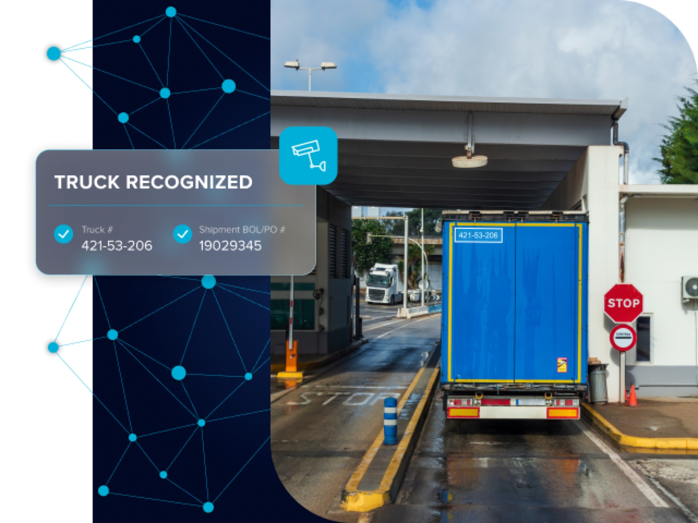
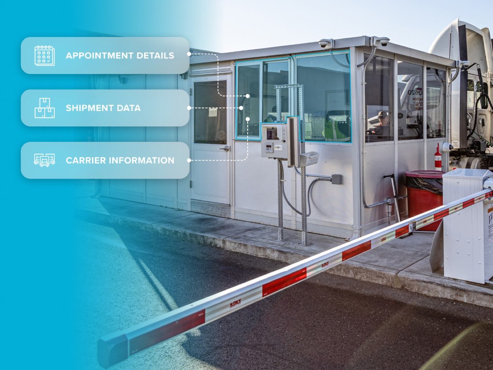
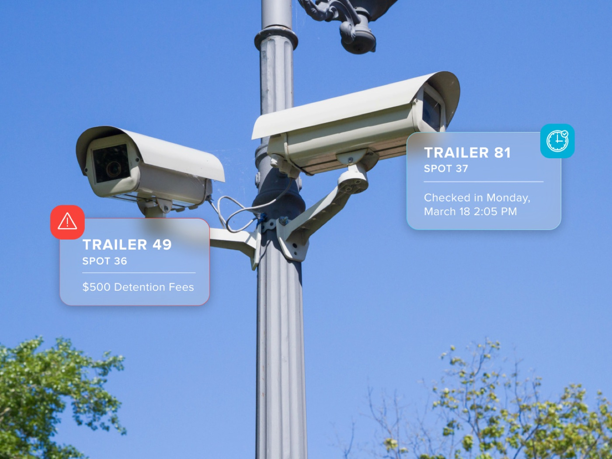
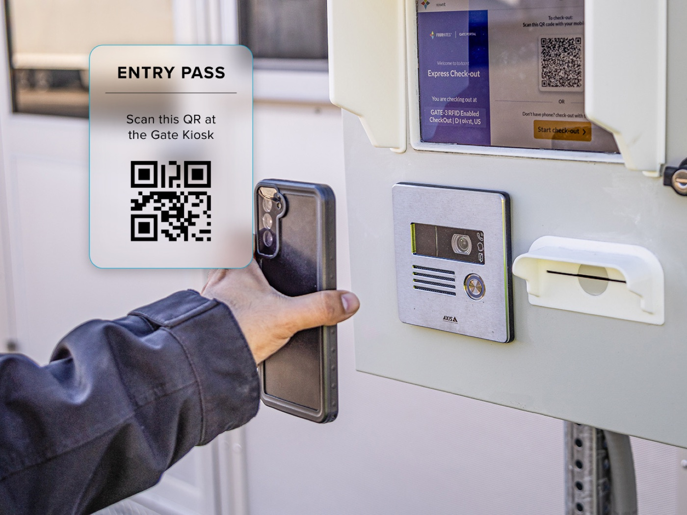
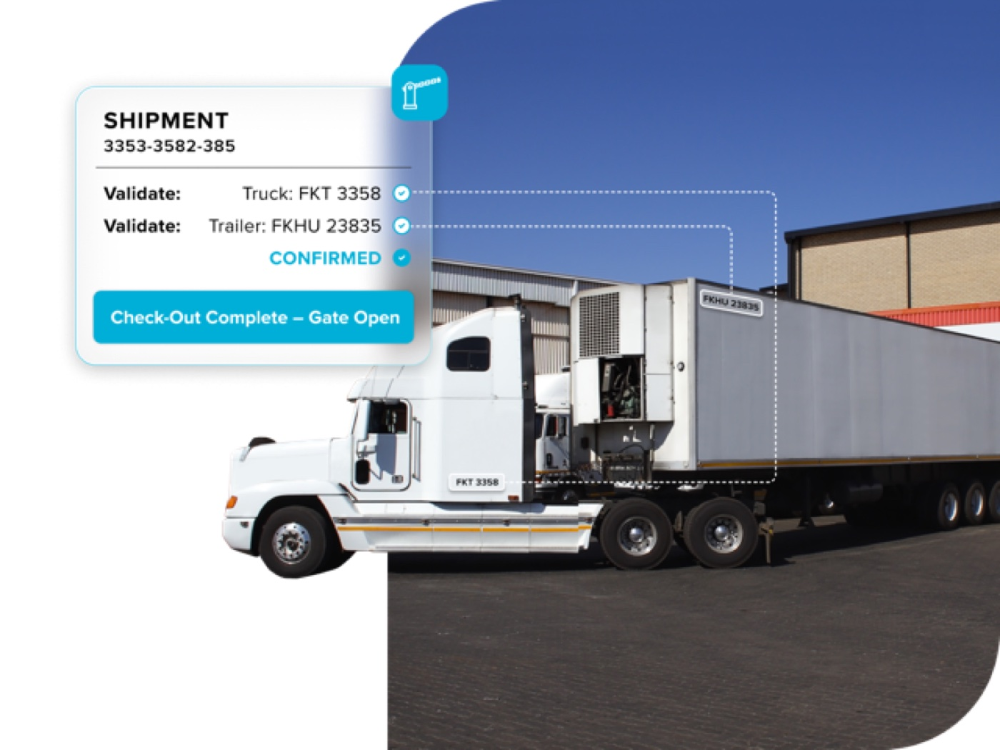

Gate Automation: Turning Supply Chain Data into Physical Operations
Connecting live shipment and appointment data to a facility's physical gate cut check-in time from 10+ minutes to under 2, and gate labor by over 90%.
Design Leadership · Product Strategy · 4 minute read
Overview
Facility gates are where digital supply chain data meets the real world, and for most carriers, that handoff still runs on clipboards, radios, and a guard waving trucks through. Every check-in is a manual re-entry of information the network usually already has: who the carrier is, what they're hauling, and when they were expected.
Gate automation closes that gap. It takes the shipment, appointment, and carrier data already flowing through FourKites and puts it to work at the point where trucks physically arrive, turning the gate from a bottleneck into an automated, self-service checkpoint.
The problem
Manual gate check-in is slow, inconsistent, and expensive to staff:
- Each truck can take 10+ minutes to check in: asset numbers, BOL/PO references, and dock or yard assignments are all re-keyed or radioed by hand.
- Guard-dependent gates can't run 24/7 without adding headcount, capping how many hours a facility can receive freight.
- Paper logs make detention disputes and dwell-time analysis slow and unreliable.
- None of this uses data the network already has. Every check-in starts from zero.
Built on Fast Track
This work builds directly on Fast Track, the QR-based contactless check-in flow I designed to close FourKites' load-tracking gap for unassigned loads. Fast Track proved the core thesis in production with customers like Land O'Lakes: drivers will self-serve check-in from their own phones if the flow is fast enough, and facilities don't need new hardware to get there.
Gate automation is the next chapter of that thesis, layering camera-based truck recognition and automated instructions on top of the same contactless, self-service principles.
Field research
The thesis behind this work came from time spent on-site at a distribution facility gate, observing drivers and gate staff working through check-in the way it actually happens.
PhotosWhat changed for drivers and facilities
Goodbye clipboards. Incoming trucks are matched against existing shipment data automatically, creating a hands-free check-in with no gate guard required.
Instructions, not guesswork. The moment check-in completes, drivers get exact, automated instructions (which dock door for a live load, which yard spot for a drop trailer) instead of waiting on a dispatcher or radio call.
Always open. Because the system doesn't depend on a guard, facilities can offer secure after-hours drop operations without adding payroll.
A trail you can act on. Every entry and exit is logged digitally, giving facilities real evidence for detention conversations and real data on dwell times and carrier performance.
How it works
Four things work together to make the gate itself disappear as a bottleneck, from the data behind the scenes to the failsafe at exit.
Step 1 · Your Data, Working Harder
From Information to Action

AutoGate AI can connect to appointment details, shipment data, and carrier information already in the FourKites platform. This integration creates pre-populated check-in forms and automated validations that speed processing while ensuring consistent record-keeping across your entire supply chain.
Step 2 · Camera Intelligence
Simple Hardware, Powerful Results

Skip expensive RFID tags and maintenance-heavy hardware. AutoGate AI uses sophisticated Visual AI technology to identify trucks and trailers automatically, bringing advanced automation to any facility regardless of size or current infrastructure.
Step 3 · Flexible Driver Options
Multiple Paths, One Experience

Some drivers prefer handling everything from their phones. Others want on-site options. AutoGate AI supports both pre-check-in and on-site authentication while maintaining data consistency, creating a system that works for every driver and carrier in your network.
Step 4 · Secure Failsafe
Continuous Validation

AutoGate AI enhances security and compliance by verifying that the correct truck and trailer combination is present at check-out. The system checks the truck and trailer numbers against company records and only opens the gate if there's a match, ensuring that only authorized combinations can exit.
Impact
- Check-in time: cut from 10+ minutes to under 2 minutes per truck.
- Labor: 90%+ reduction in manual gate work, saving an average of $70–150K per facility annually.
- Throughput: facilities can run 24/7 without adding staff, increasing throughput by up to 100%.
- Records: every gate interaction creates a verified digital record, replacing paper logs entirely.